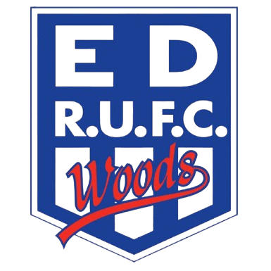

Alhambra Union Broncos
ORFU Speight’s Championship Shield
Global rank: #62 Elo: 1277.8
Browse clubs currently included in the XV Nation rankings.
ORFU Speight’s Championship Shield
Global rank: #62 Elo: 1277.8

CMRFU McNamara Cup
Global rank: #10 Elo: 1665.8
ARU Gallaher Shield
Global rank: #5 Elo: 1700.8

CRFU Bascik Transport Cup
Global rank: #53 Elo: 1375.6

CMRFU McNamara Cup
Global rank: #50 Elo: 1396.8

QPR Hospital Cup
Global rank: #32 Elo: 1529.3

QPR Hospital Cup
Global rank: #1 Elo: 1783.7

CRFU Bascik Transport Cup
Global rank: #37 Elo: 1487.3

ACT John I Dent Cup
Global rank: #25 Elo: 1562.1

CRFU Bascik Transport Cup
Global rank: #54 Elo: 1368.5

ARU Gallaher Shield
Global rank: #29 Elo: 1539.9

ORFU Speight’s Championship Shield
Global rank: #16 Elo: 1602.3

SRU Shute Shield
Global rank: #2 Elo: 1763.2
QPR Hospital Cup
Global rank: #33 Elo: 1529.0

SRU Shute Shield
Global rank: #38 Elo: 1483.3

ARU Gallaher Shield
Global rank: #49 Elo: 1402.5

QPR Hospital Cup
Global rank: #58 Elo: 1308.1

SRU Shute Shield
Global rank: #14 Elo: 1608.3

ARU Gallaher Shield
Global rank: #21 Elo: 1576.7

ORFU Speight’s Championship Shield
Global rank: #43 Elo: 1459.7

ACT John I Dent Cup
Global rank: #42 Elo: 1463.0

CRFU Bascik Transport Cup
Global rank: #23 Elo: 1573.2

ORFU Speight’s Championship Shield
Global rank: #27 Elo: 1544.1
SRU Shute Shield
Global rank: #52 Elo: 1377.5
ORFU Speight’s Championship Shield
Global rank: #7 Elo: 1685.6
CMRFU McNamara Cup
Global rank: #11 Elo: 1635.6
CRFU Bascik Transport Cup
Global rank: #20 Elo: 1586.1
CRFU Bascik Transport Cup
Global rank: #8 Elo: 1670.0
SRU Shute Shield
Global rank: #45 Elo: 1450.5
ARU Gallaher Shield
Global rank: #57 Elo: 1317.1
CMRFU McNamara Cup
Global rank: #40 Elo: 1470.2
ARU Gallaher Shield
Global rank: #13 Elo: 1625.5
CRFU Bascik Transport Cup
Global rank: #3 Elo: 1744.5
CRFU Bascik Transport Cup
Global rank: #31 Elo: 1530.4
SRU Shute Shield
Global rank: #26 Elo: 1553.9
QPR Hospital Cup
Global rank: #36 Elo: 1492.8
ORFU Speight’s Championship Shield
Global rank: #30 Elo: 1537.5
ARU Gallaher Shield
Global rank: #44 Elo: 1455.6
CMRFU McNamara Cup
Global rank: #55 Elo: 1328.2
CMRFU McNamara Cup
Global rank: #17 Elo: 1591.6
ARU Gallaher Shield
Global rank: #6 Elo: 1699.9
CMRFU McNamara Cup
Global rank: #12 Elo: 1626.6
ACT John I Dent Cup
Global rank: #34 Elo: 1525.0
SRU Shute Shield
Global rank: #28 Elo: 1542.0
CRFU Bascik Transport Cup
Global rank: #66 Elo: 1187.9
SRU Shute Shield
Global rank: #65 Elo: 1229.7
ORFU Speight’s Championship Shield
Global rank: #24 Elo: 1567.6
QPR Hospital Cup
Global rank: #39 Elo: 1471.6
ARU Gallaher Shield
Global rank: #51 Elo: 1382.5
CRFU Bascik Transport Cup
Global rank: #47 Elo: 1439.3
QPR Hospital Cup
Global rank: #61 Elo: 1278.8
CRFU Bascik Transport Cup
Global rank: #46 Elo: 1446.5
SRU Shute Shield
Global rank: #22 Elo: 1574.5
ORFU Speight’s Championship Shield
Global rank: #19 Elo: 1587.3
ACT John I Dent Cup
Global rank: #4 Elo: 1721.5
SRU Shute Shield
Global rank: #48 Elo: 1429.0
ACT John I Dent Cup
Global rank: #41 Elo: 1466.1
CRFU Bascik Transport Cup
Global rank: #18 Elo: 1590.7
QPR Hospital Cup
Global rank: #35 Elo: 1500.7
ARU Gallaher Shield
Global rank: #59 Elo: 1299.4
SRU Shute Shield
Global rank: #9 Elo: 1667.8
SRU Shute Shield
Global rank: #56 Elo: 1320.3
ACT John I Dent Cup
Global rank: #63 Elo: 1262.4
QPR Hospital Cup
Global rank: #15 Elo: 1605.9
CMRFU McNamara Cup
Global rank: #60 Elo: 1285.2
ORFU Speight’s Championship Shield
Global rank: #64 Elo: 1238.2